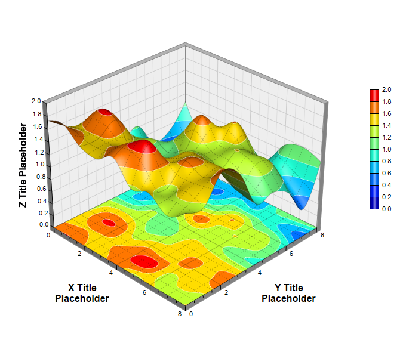

This example demonstrates adding a surface projection to the XY wall using SurfaceChart.addXYProjection.
ChartDirector 7.1 (C++ Edition)
Surface Projection

Source Code Listing
#include "chartdir.h"
int main(int argc, char *argv[])
{
// The x and y coordinates of the grid
double dataX[] = {0, 1, 2, 3, 4, 5, 6, 7, 8};
const int dataX_size = (int)(sizeof(dataX)/sizeof(*dataX));
double dataY[] = {0, 1, 2, 3, 4, 5, 6, 7, 8};
const int dataY_size = (int)(sizeof(dataY)/sizeof(*dataY));
// Use random numbers for the z values on the XY grid
RanSeries* r = new RanSeries(11);
DoubleArray dataZ = r->get2DSeries(dataX_size, dataY_size, 0.1, 1.9);
// Create a SurfaceChart object of size 680 x 580 pixels
SurfaceChart* c = new SurfaceChart(680, 580);
// Set the center of the plot region at (310, 280), and set width x depth x height to 320 x 320
// x 240 pixels
c->setPlotRegion(310, 280, 320, 320, 240);
// Set the elevation and rotation angles to 30 and 45 degrees
c->setViewAngle(30, 45);
// Set the data to use to plot the chart
c->setData(DoubleArray(dataX, dataX_size), DoubleArray(dataY, dataY_size), dataZ);
// Spline interpolate data to a 80 x 80 grid for a smooth surface
c->setInterpolation(80, 80);
// Use semi-transparent black (c0000000) for x and y major surface grid lines. Use dotted style
// for x and y minor surface grid lines.
int majorGridColor = 0xc0000000;
int minorGridColor = c->dashLineColor(majorGridColor, Chart::DotLine);
c->setSurfaceAxisGrid(majorGridColor, majorGridColor, minorGridColor, minorGridColor);
// Add XY projection
c->addXYProjection();
// Set contour lines to semi-transparent white (0x7fffffff)
c->setContourColor(0x7fffffff);
// Add a color axis (the legend) in which the left center is anchored at (620, 250). Set the
// length to 200 pixels and the labels on the right side.
c->setColorAxis(620, 250, Chart::Left, 200, Chart::Right);
// Set the x, y and z axis titles using 12 pt Arial Bold font
c->xAxis()->setTitle("X Title<*br*>Placeholder", "Arial Bold", 12);
c->yAxis()->setTitle("Y Title<*br*>Placeholder", "Arial Bold", 12);
c->zAxis()->setTitle("Z Title Placeholder", "Arial Bold", 12);
// Output the chart
c->makeChart("surfaceprojection.png");
//free up resources
delete r;
delete c;
return 0;
}